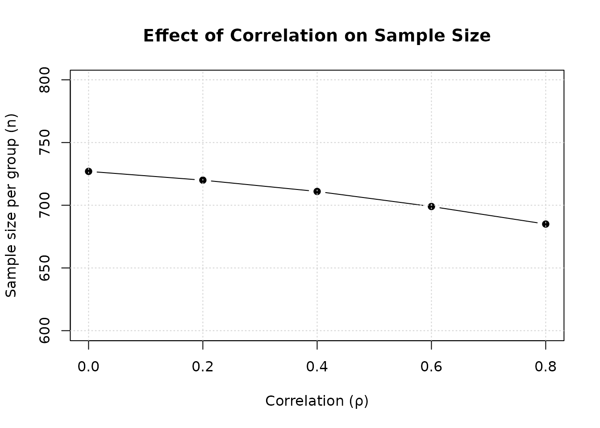

Mixed Count and Continuous Co-Primary Endpoints
Source:vignettes/mixed-count-continuous.Rmd
mixed-count-continuous.RmdOverview
This vignette demonstrates sample size calculation and power analysis for clinical trials with two co-primary endpoints: an overdispersed count outcome (following negative binomial distribution) and a continuous outcome (following normal distribution). The methodology is based on Homma and Yoshida (2024).
Background
Clinical Context
In clinical trials for treating asthma and chronic obstructive pulmonary disease (COPD), regulatory agencies require evaluation of both:
- Count endpoint: Number of exacerbations over follow-up period (overdispersed count data)
- Continuous endpoint: Lung function measure such as (forced expiratory volume in 1 second)
Why Negative Binomial Distribution?
Count outcomes in clinical trials often exhibit overdispersion, where the variance substantially exceeds the mean. The Poisson distribution assumes variance = mean, which is often violated.
Negative binomial (NB) distribution accommodates overdispersion:
- Mean: (rate time)
- Variance:
-
Dispersion parameter:
controls overdispersion
- As : (no overdispersion)
- Small : High overdispersion (variance mean)
Variance-to-mean ratio (VMR):
When , data are overdispersed and NB is more appropriate than Poisson.
Statistical Framework
Model and Assumptions
Consider a two-arm superiority trial with sample sizes (treatment) and (control), with allocation ratio .
For subject in group (: treatment, : control), we observe two outcomes:
Outcome 1 (Count):
where is the expected number of events in group , and is the common dispersion parameter.
Outcome 2 (Continuous):
where is the population mean in group , and is the common variance across groups.
Correlation Structure
The correlation between count and continuous outcomes within subjects is measured by in group . This correlation must satisfy feasibility constraints based on the Fréchet-Hoeffding copula bounds, which depend on the marginal distributions.
Use the corrbound2MixedCountContinuous() function to
check valid correlation bounds for given parameters.
Hypothesis Testing
We test superiority of treatment over control for both endpoints. Note: In COPD/asthma trials, treatment benefit is indicated by lower values for both endpoints (fewer exacerbations, less decline in lung function).
For count endpoint (1):
Equivalently, testing .
For continuous endpoint (2):
Co-primary endpoints (intersection-union test):
Reject at level if and only if both and are rejected at level .
Test Statistics
Count endpoint (Equation 7 in Homma and Yoshida, 2024):
where:
- is the log rate ratio
Continuous endpoint:
When is a common known standard deviation.
Joint Distribution and Correlation
Under , the test statistics asymptotically follow a bivariate normal distribution (Appendix B in Homma and Yoshida, 2024):
where:
- with
- with
Correlation between test statistics (Equation 11 in Homma and Yoshida, 2024):
For balanced design () with common correlation ():
Power Calculation
The overall power is (Equation 10 in Homma and Yoshida, 2024):
Using the bivariate normal CDF :
Sample Size Determination
The sample size is determined by solving the power equation numerically. For a given allocation ratio , target power , and significance level , we find the smallest such that the overall power equals or exceeds .
Sequential search algorithm:
- Calculate initial sample size based on single-endpoint formulas
- Compute power at current sample size
- If power target: decrease until power target, then add 1 back
- If power target: increase until power target
Correlation Bounds
Example: Calculate Correlation Bounds
# Scenario: lambda = 1.25, nu = 0.8, mu = 0, sigma = 250
bounds1 <- corrbound2MixedCountContinuous(lambda = 1.25, nu = 0.8, mu = 0, sd = 250)
cat("Correlation bounds for NB(1.25, 0.8) and N(0, 250²):\n")
#> Correlation bounds for NB(1.25, 0.8) and N(0, 250²):
cat("Lower bound:", round(bounds1[1], 3), "\n")
#> Lower bound: -0.846
cat("Upper bound:", round(bounds1[2], 3), "\n\n")
#> Upper bound: 0.846
# Higher dispersion (smaller nu) typically restricts bounds
bounds2 <- corrbound2MixedCountContinuous(lambda = 1.25, nu = 0.5, mu = 0, sd = 250)
cat("Correlation bounds for NB(1.25, 0.5) and N(0, 250²):\n")
#> Correlation bounds for NB(1.25, 0.5) and N(0, 250²):
cat("Lower bound:", round(bounds2[1], 3), "\n")
#> Lower bound: -0.802
cat("Upper bound:", round(bounds2[2], 3), "\n\n")
#> Upper bound: 0.802
# Higher mean count
bounds3 <- corrbound2MixedCountContinuous(lambda = 2.0, nu = 0.8, mu = 0, sd = 250)
cat("Correlation bounds for NB(2.0, 0.8) and N(0, 250²):\n")
#> Correlation bounds for NB(2.0, 0.8) and N(0, 250²):
cat("Lower bound:", round(bounds3[1], 3), "\n")
#> Lower bound: -0.863
cat("Upper bound:", round(bounds3[2], 3), "\n")
#> Upper bound: 0.863Important: Always verify that the specified correlation is within the feasible bounds for your parameters.
Replicating Homma and Yoshida (2024) Table 1 (Case B)
Table 1 from Homma and Yoshida (2024) shows sample sizes and operating characteristics for various scenarios. We replicate Case B with and .
Design parameters for Case B:
- Count rates: , , → ,
- Dispersion: and
- Continuous means: , (negative indicates less decline)
- Standard deviation:
- (one-sided), (target power)
- Balanced allocation: ()
# Define scenarios for Table 1 Case B
scenarios_table1_B <- expand.grid(
nu = c(3, 5),
rho = c(0, 0.2, 0.4, 0.6, 0.8),
stringsAsFactors = FALSE
)
# Calculate sample sizes for each scenario
results_table1_B <- lapply(1:nrow(scenarios_table1_B), function(i) {
nu_val <- scenarios_table1_B$nu[i]
rho_val <- scenarios_table1_B$rho[i]
result <- ss2MixedCountContinuous(
r1 = 1,
r2 = 2,
nu = nu_val,
t = 1,
mu1 = -50,
mu2 = 0,
sd = 75,
r = 1,
rho1 = rho_val,
rho2 = rho_val,
alpha = 0.025,
beta = 0.1
)
data.frame(
nu = nu_val,
rho = rho_val,
n2 = result$n2,
n1 = result$n1,
N = result$N
)
})
table1_B_results <- bind_rows(results_table1_B)
# Display results grouped by nu
table1_B_nu3 <- table1_B_results %>%
filter(nu == 3) %>%
select(rho, n2, N)
table1_B_nu5 <- table1_B_results %>%
filter(nu == 5) %>%
select(rho, n2, N)
kable(table1_B_nu3,
caption = "Table 1 Case B: Sample Sizes (ν = 3, Balanced Design, α = 0.025, 1-β = 0.9)",
digits = 1,
col.names = c("ρ", "n per group", "N total"))| ρ | n per group | N total |
|---|---|---|
| 0.0 | 59 | 118 |
| 0.2 | 58 | 116 |
| 0.4 | 57 | 114 |
| 0.6 | 56 | 112 |
| 0.8 | 54 | 108 |
kable(table1_B_nu5,
caption = "Table 1 Case B: Sample Sizes (ν = 5, Balanced Design, α = 0.025, 1-β = 0.9)",
digits = 1,
col.names = c("ρ", "n per group", "N total"))| ρ | n per group | N total |
|---|---|---|
| 0.0 | 55 | 110 |
| 0.2 | 55 | 110 |
| 0.4 | 54 | 108 |
| 0.6 | 53 | 106 |
| 0.8 | 51 | 102 |
Observations:
- Higher dispersion parameter (less overdispersion) requires smaller sample sizes
- Correlation reduces sample size: approximately 2-4% at , 5-8% at
- The effect of correlation is moderate compared to other endpoint combinations
Basic Usage Examples
Example 1: Balanced Design
Calculate sample size for a balanced design with moderate effect sizes:
# Balanced design: n1 = n2 (i.e., r = 1)
result_balanced <- ss2MixedCountContinuous(
r1 = 1.0, # Count rate in treatment group
r2 = 1.25, # Count rate in control group
nu = 0.8, # Dispersion parameter
t = 1, # Follow-up time
mu1 = -50, # Mean for treatment (negative = benefit)
mu2 = 0, # Mean for control
sd = 250, # Standard deviation
r = 1, # Balanced allocation
rho1 = 0.5, # Correlation in treatment group
rho2 = 0.5, # Correlation in control group
alpha = 0.025,
beta = 0.2
)
print(result_balanced)
#>
#> Sample size calculation for mixed count and continuous co-primary endpoints
#>
#> n1 = 705
#> n2 = 705
#> N = 1410
#> sd = 250
#> rate = 1, 1.25
#> nu = 0.8
#> t = 1
#> mu = -50, 0
#> rho = 0.5, 0.5
#> allocation = 1
#> alpha = 0.025
#> beta = 0.2Example 2: Effect of Correlation
Demonstrate how correlation affects sample size:
# Fixed effect sizes
r1 <- 1.0
r2 <- 1.25
nu <- 0.8
mu1 <- -50
mu2 <- 0
sd <- 250
# Range of correlations
rho_values <- c(0, 0.2, 0.4, 0.6, 0.8)
ss_by_rho <- sapply(rho_values, function(rho) {
result <- ss2MixedCountContinuous(
r1 = r1, r2 = r2, nu = nu, t = 1,
mu1 = mu1, mu2 = mu2, sd = sd,
r = 1,
rho1 = rho, rho2 = rho,
alpha = 0.025,
beta = 0.2
)
result$n2
})
result_df <- data.frame(
rho = rho_values,
n_per_group = ss_by_rho,
N_total = ss_by_rho * 2,
reduction_pct = round((1 - ss_by_rho / ss_by_rho[1]) * 100, 1)
)
kable(result_df,
caption = "Effect of Correlation on Sample Size",
col.names = c("ρ", "n per group", "N total", "Reduction (%)"))| ρ | n per group | N total | Reduction (%) |
|---|---|---|---|
| 0.0 | 727 | 1454 | 0.0 |
| 0.2 | 720 | 1440 | 1.0 |
| 0.4 | 711 | 1422 | 2.2 |
| 0.6 | 699 | 1398 | 3.9 |
| 0.8 | 685 | 1370 | 5.8 |
# Plot
plot(rho_values, ss_by_rho,
type = "b", pch = 19,
xlab = "Correlation (ρ)",
ylab = "Sample size per group (n)",
main = "Effect of Correlation on Sample Size",
ylim = c(600, max(ss_by_rho) * 1.1))
grid()
Interpretation: Higher positive correlation reduces required sample size. At , sample size is reduced by approximately 5-7% compared to .
Example 3: Effect of Dispersion Parameter
Compare sample sizes for different levels of overdispersion:
# Fixed design parameters
r1 <- 1.0
r2 <- 1.25
mu1 <- -50
mu2 <- 0
sd <- 250
rho <- 0.5
# Range of dispersion parameters
nu_values <- c(0.5, 0.8, 1.0, 2.0, 5.0)
ss_by_nu <- sapply(nu_values, function(nu) {
result <- ss2MixedCountContinuous(
r1 = r1, r2 = r2, nu = nu, t = 1,
mu1 = mu1, mu2 = mu2, sd = sd,
r = 1,
rho1 = rho, rho2 = rho,
alpha = 0.025,
beta = 0.2
)
result$n2
})
result_df_nu <- data.frame(
nu = nu_values,
VMR = round(1 + 1.125/nu_values, 2), # VMR at lambda = 1.125 (average)
n_per_group = ss_by_nu,
N_total = ss_by_nu * 2
)
kable(result_df_nu,
caption = "Effect of Dispersion Parameter on Sample Size",
digits = c(1, 2, 0, 0),
col.names = c("ν", "VMR", "n per group", "N total"))| ν | VMR | n per group | N total |
|---|---|---|---|
| 0.5 | 3.25 | 921 | 1842 |
| 0.8 | 2.41 | 705 | 1410 |
| 1.0 | 2.12 | 639 | 1278 |
| 2.0 | 1.56 | 522 | 1044 |
| 5.0 | 1.23 | 463 | 926 |
Key finding: Higher overdispersion (smaller , larger VMR) requires larger sample sizes.
Example 4: Unbalanced Allocation
Calculate sample size with 2:1 allocation ratio:
# Balanced design (r = 1)
result_balanced <- ss2MixedCountContinuous(
r1 = 1.0, r2 = 1.25, nu = 0.8, t = 1,
mu1 = -50, mu2 = 0, sd = 250,
r = 1,
rho1 = 0.5, rho2 = 0.5,
alpha = 0.025,
beta = 0.2
)
# Unbalanced design (r = 2, i.e., n1 = 2*n2)
result_unbalanced <- ss2MixedCountContinuous(
r1 = 1.0, r2 = 1.25, nu = 0.8, t = 1,
mu1 = -50, mu2 = 0, sd = 250,
r = 2,
rho1 = 0.5, rho2 = 0.5,
alpha = 0.025,
beta = 0.2
)
comparison_allocation <- data.frame(
Design = c("Balanced (1:1)", "Unbalanced (2:1)"),
n_treatment = c(result_balanced$n1, result_unbalanced$n1),
n_control = c(result_balanced$n2, result_unbalanced$n2),
N_total = c(result_balanced$N, result_unbalanced$N)
)
kable(comparison_allocation,
caption = "Comparison: Balanced vs Unbalanced Allocation",
col.names = c("Design", "n₁", "n₂", "N total"))| Design | n₁ | n₂ | N total |
|---|---|---|---|
| Balanced (1:1) | 705 | 705 | 1410 |
| Unbalanced (2:1) | 1044 | 522 | 1566 |
Power Verification
Verify that calculated sample sizes achieve target power:
# Use result from Example 1
power_result <- power2MixedCountContinuous(
n1 = result_balanced$n1,
n2 = result_balanced$n2,
r1 = 1.0,
r2 = 1.25,
nu = 0.8,
t = 1,
mu1 = -50,
mu2 = 0,
sd = 250,
rho1 = 0.5,
rho2 = 0.5,
alpha = 0.025
)
cat("Target power: 0.80\n")
#> Target power: 0.80
cat("Achieved power (Count endpoint):", round(as.numeric(power_result$power1), 4), "\n")
#> Achieved power (Count endpoint):
cat("Achieved power (Continuous endpoint):", round(as.numeric(power_result$power2), 4), "\n")
#> Achieved power (Continuous endpoint):
cat("Achieved power (Co-primary):", round(as.numeric(power_result$powerCoprimary), 4), "\n")
#> Achieved power (Co-primary): 0.8003Practical Recommendations
Design Considerations
Estimating dispersion parameter: Use pilot data or historical studies to estimate . Underestimating (overestimating overdispersion) leads to conservative sample sizes.
Estimating correlation: Use pilot data; be conservative if uncertain ( is conservative).
Direction of benefit: For COPD/asthma trials, ensure test directions are correct (lower is better for both endpoints).
Balanced allocation: Generally most efficient () unless practical constraints require otherwise.
Sensitivity analysis: Calculate sample sizes for range of plausible , , and effect sizes.
When to Use This Method
Use mixed count-continuous methods when:
- One endpoint is an overdispersed count (exacerbations, events)
- Other endpoint is continuous (lung function, quality of life)
- Both endpoints are clinically meaningful co-primary endpoints
- Negative binomial distribution is appropriate for count data
Challenges and Considerations
Overdispersion estimation: Requires historical data or pilot studies; misspecification affects sample size
Correlation estimation: Correlation between count and continuous outcomes is challenging to estimate
Direction specification: Ensure treatment benefit direction is correctly specified for both endpoints